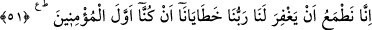
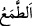

51. “Biz, ilk iman edenler olduğumuz için Rabbimizin hatalarımızı bağışlayacağını
umarız.”
“Biz,” Fir’avn’a tâbi olanlardan veya orada hazır bulunup şâhid olanlardan “ilk iman
edenler olduğumuz için Rabbimizin” şirk ve diğer geçmiş “hatalarımızı
bağışlayacağını umarız.”
el-Müfredât’ta der ki: “ nefsin arzu ederek bir şeye meyletmesi, arzulamasıdır.”
Kâşifî der ki: “Rivâyet edildiğine göre Fir’avn, o müminlerin sağ el ve sol
ayaklarının kesilmesini emretti. Onları yüksek darağaçlarına astılar. Mûsâ (a.s.) onlar
için gözyaşı döktü. Allah Teâlâ perdeleri kaldırıp onların kurbiyet menzillerini ve üns
makamlarını Hz. Mûsâ’nın gözü önüne getirdi, böylelikle teselli buldu.”
El ve ayaklarını kaybeden sihirbazlar
Mevlâ’ya yakınlık fezâsında uçtular
El ve ayakları gitse de, onun yerine
Hak’tan ebediyet kanatları taktılar
O kanatlarla göklere ağdılar
Aşk semâsında hepsi birer şahbaz oldular
Çünkü vücûddan/varlıktan noksanlaşan ruhda ve şuhûdda ziyâdeleşir. Allah Teâlâ
kuldan fânîyi alır, yerine bâkîyi koyar.
Hz. Peygamberimiz (s.a.)’in amcasının oğlu Ca’fer, gazâlardan birinde sancağı sağ
eline almıştı. Sağ eli kesilince sol eline aldı. O da kesildi. Bunun üzerine şehid olana
kadar onu iki pazusuyla kucakladı. Yaşı otuz üç idi. Bu yüzden Allah ona bu ameline
karşılık cennette istediği yere uçacağı iki kanat verdi. Bu yüzden ona “Ca’fer-i Tayyâr”
denilmiştir.
İşte dâvâsında sâdık olanın hâli böyledir. Belâyı verenin Allah olduğunu bilmen
senden belânın elemini hafifletir. Fakat bu bilme müşâhede mertebesinden olmadığı
zaman tam hafifleme hâsıl olmaz. Sihirbazların hâli şuhûd ve cezbe hâli idi. Böylesi
nâdiren vukû bulur. Çünkü sâliklerin çoğu için incizâb bir defada olmaz, tedrîcîdir. Hz.
Ömer (r.a.)’ın îman sırasındaki hâli, sihirbazların hâli gibidir.
Hâsılı îman ihsânın vesîlesi, vâsıtasıdır. Kim îman eder, ameller konusunda hâlini
ıslâha çalışırsa, Allah onu hallerin sâhiplerinin ulaştığı makamlara erdirir. Nitekim Hz.
Peygamber (a.s.) “Kim bildiği ile amel ederse, Allah onu bilmediği şeylerin ilmine
vâris kılar.”[7] buyurmuştur.
Hz. Şeyh-i Ekber (k.s.) der ki: “Muhammed (s.a.)’in peygamberlikten önce İbrahim
(a.s.)’ın şeriatıyla Allah’a ibadet etmesi, Allah’dan O’na bir inâyet idi. Nihâyet O’na
vahiy ve risâlet geldi. Aynı şekilde kâmil velînin de şerîat-ı mutahharra ile amele